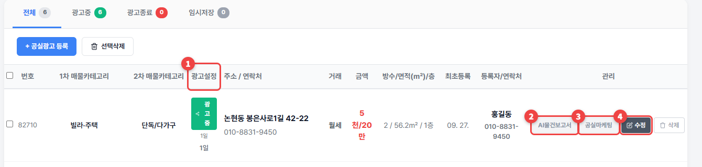

공실관리
올린 공실을 보고, 광고를 켜고 끄고, 고칩니다.
1
위쪽 탭(전체 · 광고중 · 광고종료 · 임시저장)으로 골라 보세요. 목록 한 줄의 버튼은 이렇습니다.① 광고설정: 눌러서 광고중 ↔ 광고종료 ② AI물건보고서: 고객에게 보낼 매물 보고서를 AI로 만들기 ③ 공실마케팅: 외관 리모델링·인테리어 이미지, 전단지 ④ 수정

💡 알아두세요
- 새 공실은 + 공실광고 등록으로 올립니다. → 첫 공실 등록하기
- AI물건보고서를 만든 공실은 버튼이 파랗게 바뀝니다. 다시 누르면 고칠 수 있습니다.